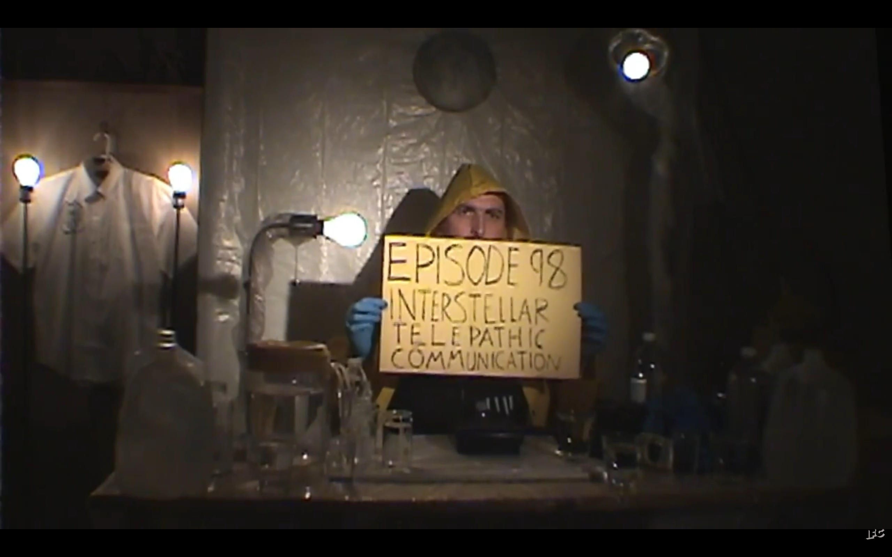
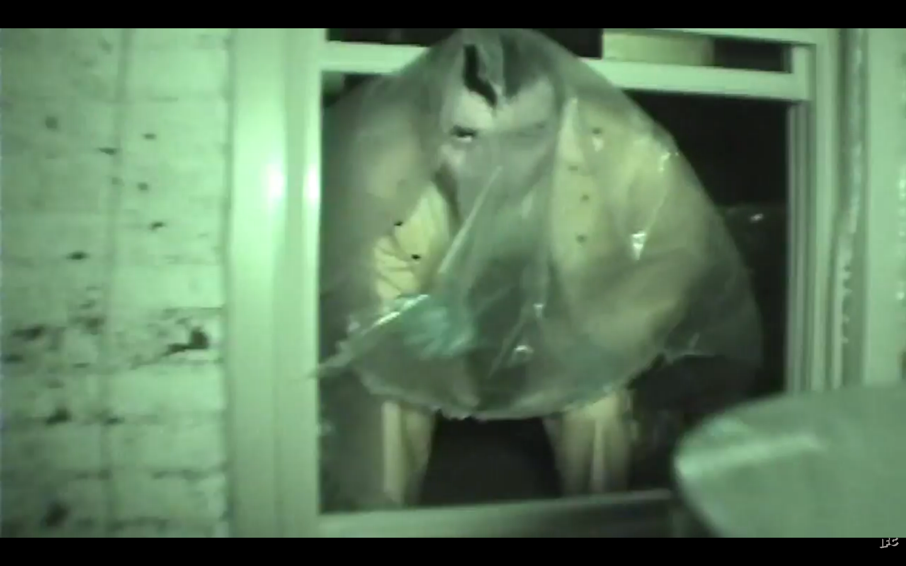
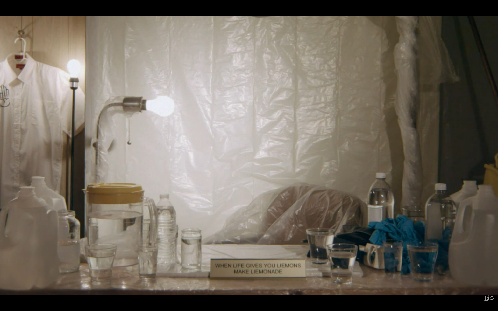
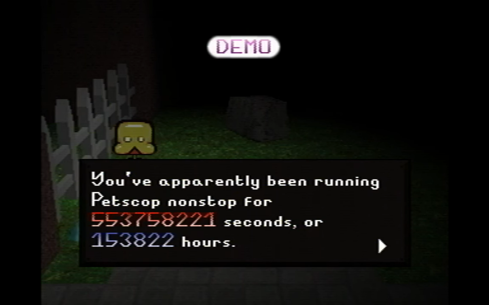
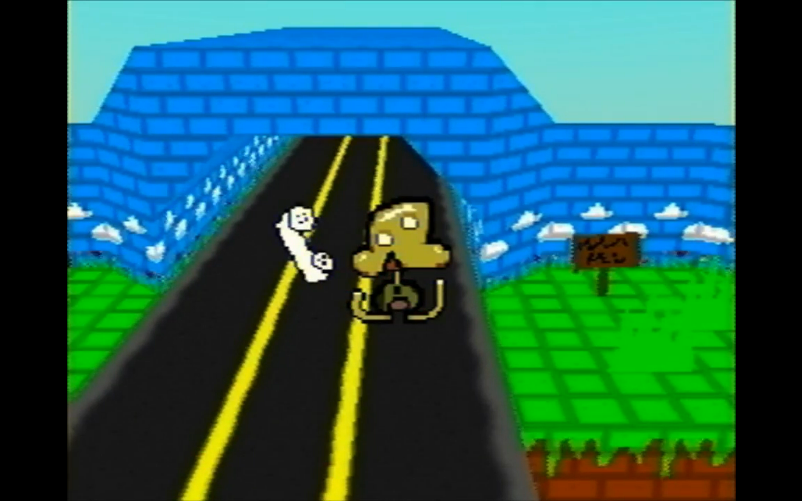
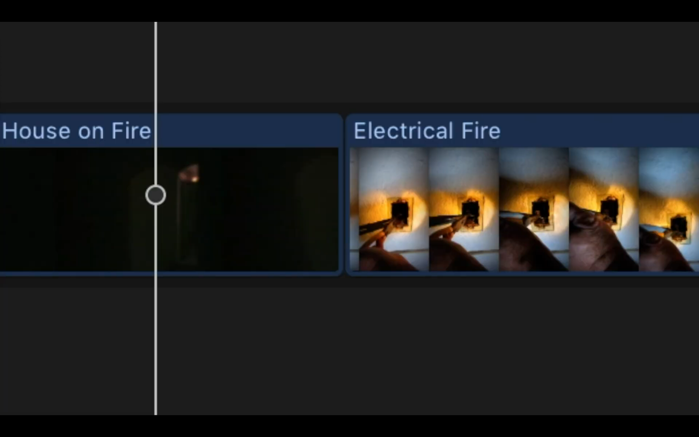
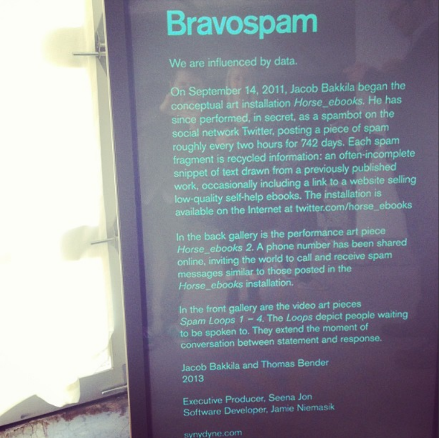

How online art projects challenge user expectations
Lisa Maria Ziebermayr
Some years ago, I read a tweet by @horse_ebooks: “Everyone s negative comments actually paved the way for my bodybuilding success.” I saved the tweet. Next time I was on Twitter, the horse announced itself again: “Ask your dumbass friends if they know of a reputable artist.” I didn’t ask my friends, but I kept falling down the rabbit hole: @horse_ebooks was constantly linking to a website called “e-library.us” in-between sentences. It dawned on me that the horse was a spam bot all along, albeit a strangely poetic one.
Hito Steyerl, film maker and writer, defines spam(ming) as “the pointless repetition of something worthless and annoying, over and over again, to extract a tiny spark of value lying dormant within audiences.”1 But something was different with @horse_ebooks. It kept tweeting into the void, one poetic tweet after another. People loved it so much, they thought it was the only real thing left on Twitter. But as Barbara Cueto, a Berlin based researcher, and Bas Hendrikx, a Dutch curator, recognized in their book Authenticity? Observations and Artistic Strategies in the Post Digital Age, real things online and their perceived authenticity are tricky. Digital artifacts and people are judged on their ability to be categorized, simulating a “truer alternative” when compared to real life2 – @horse_ebooks was, of course, the perceived reality people wanted: It genuinely posted “accidental” poetry, while not being very good at scamming people into buying horse ebooks.3
It was like I was experiencing a reverse plane crash once I figured out what happened: @horse_ebooks was not an independent agent, nor was it randomly posting spam. It is owned by Jacob Bakkila who is part of Synydine with his friend Thomas Bender, and it led to the FMV video game Bear Sterns Bravo, which both developed before @horse_ebooks existed: @horse_ebooks was the project known as Horse_ebooks, a conceptual performance piece dated 2011-2013.4
Twitter users felt cheated and betrayed; they wanted a spam bot twitter account to write them poetry. Instead they got an art project so convincing, it might as well have been a ghost in the machine.5 I also had a strong reaction. Why did I feel like I was getting sucked into a black hole and spit back out by the Horse? It’s a strange feeling to be so immersed into a project, it becomes your entire reality. It’s a rare thing, and it begs the question: How do artists use online artifacts to create projects that evoke intense emotions?
@horse_ebooks is quiet now. The last tweet is from 2013, saying: “Bear Stearns Bravo”. There is a lot that had to happen for such a violent ending.
“I have personally used this technique to break many memory”
-Horse_ebooks Sep 21, 2013
It’s 2011, the year of 140-character poetry; diary entries and people saying “I hate Twitter” on Twitter daily. The Twitter account @horse_ebooks began to dream and write more poetic sentences, while still linking to e-library.us. People took note of the account's strange musings with delight. While people got suspicious enough to stay and follow the horse’s trail, they were equally fooled by the strict post schedule and out of context tweets into believing that @horse_ebooks was a real spam bot. Meanwhile, the new owner of the account, Jacob Bakkila, transformed the account into the project Horse_ebooks.
At the time, Horse_ebooks’ tweets read like a rogue pilot; a phenomenon that cannot be influenced by the audience looking for clues, because according to what the account appeared to be, there weren’t any. The bot posted seemingly unmediated material: The tweets read like randomly selected phrases from cheap ebooks the account was trying to sell, but being cut off by the 140-character limit in tweets. The horse created a network of admirers, believers, and fellow poets.
What Horse_ebooks did best was understanding that the community around it was experiencing a specific reality: artifacts emerging spontaneously, without warning, saying everything and nothing at once. People put definite expectations on @horse_ebooks: It was a spam bot, it wasn’t very good at its job, it was funny and relatable and most importantly, it was weird enough to warrant staying for more. It seemed like an unrestricted place where anything could happen, but really, people thought they knew what they were getting into.
As Domenico Quaranta, a contemporary art critic and curator, suggests in Your Computer, Media Reality (or Internet Reality) is not a simulacrum to ontological reality; they exist side by side.6 While our experienced world is always present, our digital reality sits beside us. We are affected by both in their own way; we give digital artifacts power as we give material objects and experiences power to ground us to reality.7
I think of Walter Benjamin, a German media-theorist, when he talks about the epic theatre by Berthold Brecht: “But the situations the epic theatre presents are to be found at the end, not at the beginning of these experiments. Situations which, in whatever form, are always ours.”8
The epic theatre by Berthold Brecht is understood as an experiment that confronts the audience with real situations and leaves them to reflect on these after the theatre performance. It aims to evoke action after the experience, contrary to how the dramatic theatre frames itself, capturing emotions from the audience only in the duration of the play.9
The idea of the epic theatre is not limited to theatre performances, though. The essence of Brecht’s innovations can be found in online artworks like Horse_ebooks, which is situating us in the play it is presenting; the fiction turns into reality, showing us something we already experience. Similarly, I argue that this method is applied in reality bending video projects such as the mini-series The Mirror by Robby Rackleff, an U.S. American actor and film maker. The episodes are of a cult and its leader, Curtis, who is introducing his teachings on altruism, creativity and cleanliness. In the last episode, the cult leader is alone. Even the videographer has left, as is apparent by the bad video quality, the title theme playing from a tape recorder and Curtis holding up the title of the episode on a piece of paper: “EPISODE 98 INTERSTELLAR TELEPATHIC COMMUNICATION.” (Fig. 2)

The video is cut sporadically; Curtis is rambling incoherently. In the last couple of seconds, Curtis grabs the camera, jumps out of the window, runs in a circle back to the window and sees himself, as he is about to jump out of the window. (Fig. 3)

Finally, the last scene: “When life gives you liemons make liemonade.” (Fig. 4)

What is happening here?
It’s obvious that Curtis’ teachings are confusing and dubious, sometimes even taking concepts from existing fictional works. He mentions “Tindalos Doorways”, which directly references the fictional creatures Hounds of Tindalos, created by Frank Belknap Long.10 In an earlier video, there is a scene where the members of the mirror are visibly sick. Something has happened to them, and Curtis links this to “unclean hands” – the video cuts to a corner and a black substance on the floor. Is it just a dirty corner, or has something evil manifested through the Tindalos Doorways? The Mirror never explains this. Instead, the series ends with a vague conclusion: Curtis was a liar, an abusive cult leader. But in this story his delusions were right: Time travel is real, so what if the Tindalos Doorways are real too? The Mirror wasn’t just about lies in a cult, it was about a world where these lies become real, manifesting if you believe in it hard enough. The audience is left to grapple with the possibility that an unreliable narrator was right all along.
Horse_ebooks and its audience were not a cult. But they enact the idea of The Mirror: reality and fiction loop into each other until you can no longer see a difference. I encounter myself coming back to The Mirror time and time again. The end of this series is not the end of a story, but a mirror handed to me, showing me reality warping through a time loop. Horse_ebooks made people come back, because it did not give a resolution for the mystery they were looking at, but a reason to continue their experience through a reality loop.
“99 OF WEBSITES ON THE INTERNET ARE MISUNDERSTOOD... IS YOURS ONE OF THEM”
-Horse_ebooks Nov 3, 2011
@horse_ebooks has two timelines. Up until September 14th 2011, the account was run by Alexei Kouznetsov, a Russian web developer. @horse_ebooks, unlike other spam bots, did not mass-follow Twitter users or send unsolicited replies, avoiding getting banned from Twitter.11 It was an abnormality in the spam bot universe. Jacob Bakkila acquired the account in 2011. On September 14th, Bakkila posted the first Tweet.12 Only in 2013 did Horse_ebooks, the project, start to become visible: a YouTube account under the name Pronunciation Book started a countdown. (Fig. 5)
On the 24th of September 2013, the account uploaded the video “How to Pronounce Horse_ebooks” and @horse_ebooks posted its last tweet: “Bear Sterns Bravo”. People started scrambling. Some called the entire ordeal pretentious bullshit; others called it the most successful piece of cyber fiction.13 The term ”Net Art” was used to describe Horse_ebooks in articles. Its aparent use of Twitter / the internet as a medium and later its mutation to a web-based FMV video game seems to be the driving motivation to label Horse_ebooks as Net Art.14
However, Domenico Quaranta disagrees with this definition:
[...] the term Net Art doesn’t describe a medium, but a citizenship. It is more similar to “American Art” then to “Video Art”. [...] the term “Net Art” makes more sense [than] ever, because more and more people think about themselves as netizens, that is “citizens of the Internet”. Net Art is the art made by netizens.15
I share the same opinion. Horse_ebooks wasn’t a project that used the internet as a medium – it was taking place on the internet, within a subculture. It offered a story that allowed users to reflect on the purpose of a spam bot that doesn’t work quite right. That could only happen if Horse_ebooks was implemented in a community that talked back and reacted. As Quaranta reflects on the difference between art of the netizen and common netizen behaviour online, he states: “If digital nativity is a condition, Net Art is still a matter of choice. [...] « They are Friends of the information and not Users. »”16 @horse_ebooks changed into the project Horse_ebooks the moment Bakkila took over. By curating the messages @horse_ebooks was tweeting, he changed from netizen to spam bot, thus becoming the entity he was experiencing as a user.
Petscop (2017) (Fig. 6) is a project which was also deeply set within its community. It had two things in common with Horse_ebooks: It surrounded itself with an audience that viewed the project as an internet phenomenon, and it encouraged people to engage outside of the project's boundaries.
Petscop is an online audiovisual story about a disturbing family incident. It is told by a character that discovers this story and shares it with the audience through a series of YouTube videos. Specifically through video commenting on a strange video game the main character Paul found on his mothers attic.Visually, the Game resembles PlayStation visuals from the late 90s to early 2000s.17 Petscop dates the Game “Petscop” to 2004.18

Petscop is a web series with many themes. What made it special was the way a specific subculture was interwoven into its narrative: Here we have Paul uploading videos to the “family YouTube”, wanting to show a friend a mysterious video game he found in his family’s attic. This evokes a sense of familiarity in audiences that watch people play games and upload the gameplay video on YouTube. It's not just Paul telling the story though, but the fictional video game itself is also a storytelling device: Paul discovers that the game reveals several events that happened in the past, the late 90s, when the game was being developed. We understand in what time frame this part of the story is set in, because we know how games for the PlayStation looked – under the condition that we are part of that subculture in which Petscop is placing its narrative, of course.
Petscop has had a similar effect as Horse_ebooks: Both used a subcultural aesthetic to tell a story the audience ultimately was able to reflect on. Petscop could have happened to a character like Paul, but it seems relatable to some degree to other people within that subculture, because Petscop looks and feels like a gameplay video series on YouTube.
Petscop paved the way to tell internet stories through the aesthetics of its specific subculture.19 However, a strange thing happened: The fiction Petscop and reality of Petscop, the artwork, blur through efforts from its viewership. Sheriff Domestic (2019) (Fig. 7) is an independent project in the universe of the fictional game Petscop, as well as the subculture around Petscop, created by a currently unknown Person that has at some point been a viewer of Petscop. Functionally, Sheriff Domestic takes on the aesthetics of a bootleg video game production, by crudely copying the main character sprite of Petscop and loosely basing the environment graphics on Petscop. Sheriff Domestic requires you to know about Petscop to some degree, but it tells its own story about game development, abandoned projects and video game player drama.20

Sheriff Domestic is aware that it is a bootleg production of Petscop, but it presents itself like it is a bootleg of the fictional video game Petscop: Audiences find themselves in a reality loop where fiction is reality and reality is fiction online. Like Horse_ebooks, this is a story that can only be told on the internet by people that operate in a subculture of their own.
The relationship between Petscop and Sheriff Domestic functions like the perceived reality of Horse_ebooks. On its surface, the Twitter account @horse_ebooks was a machine that tweeted spam which resonated with its audience. The audience then took its tweets and created “fan works” of the tweets. People began telling a different story, parallel to what Bakkila was doing, by interpreting Horse_ebooks as an artifact that could foster a community.
Still, there was a difference in how people received these projects. Petscop might have looked real at first, but people quickly caught on that they were being told a story. There wasn’t a revelation involved in any form. The project told its story, and that was it. People praised it for its graphics and storytelling, but nobody thought they got cheated. What made audiences react so strongly to the revelation that Horse_ebooks was a performance piece, in comparison to Petscop, which was already seen as an art project at its release?
In Authenticity? Observations and Artistic Strategies in the Post Digital Age, Cueto and Hendrikx reflect not only on identity and authenticity of the user, but also how authenticity is perceived, and even needed, in a digital context:
[...] we need to believe – that there are spaces in our lives driven by genuine affect and emotions, something outside of mere consumer culture, something above the reductiveness of profit margins, the crassness of capital exchange.21
Whether or not this belief can be affirmed remains to be seen – but it's important to understand that authenticity is signified by feeling rather than a watermark. “What makes feelings genuine? Is it because they are spontaneous? Is it because they are not motivated by gain? Is it because they are not mediated? Is it because they are witnessed?”22 The authors ask. An answer will depend on who is witnessing the (seemingly) authentic artefact – but what @horse_ebooks was for people was an unmediated experience, a broken piece of software that got recycled into an esoteric poetry diary.
What made Horse_ebooks so hard hitting wasn’t the fact that it was inhabiting a space in subculture. It was centred in it; the audience was building the lore around the Twitter account @horse_ebooks.That might be the most authentic thing in a digital landscape: an unassuming entity becoming a network of people referencing and remixing its artifacts.
“the web for the first time... and possibly the last.”
-Horse_ebooks Jul 2, 2013
The Blair Witch Project (1999), [REC] (2007) and V/H/S (2012) are three horror movies that have the same visual aspect in common: They are shaky-cam found footage. These films contain seemingly amateur but directed film material, which make the camera and camera(wo)man part of the story: It’s the horror of media itself, finding something horrifying that seems too real to be produced.23
FRAUD (2016) (Fig. 8), by Dean Fleischer Camp, takes things a step further: It’s a real found footage scam story.
The movie is set in the United States, in the early 2010s. A family finds itself in growing debt, staging an electrical fire in their house to commit insurance fraud and try to leave the country to start over with a clean slate.
Fleischer Camp didn’t record the footage himself, nor did he meet the family portraying the characters until after the movie.24 All he did was find an archive of home videos on YouTube and craft a story out of those videos (Fig. 9). The first screenings of the film resulted in frictions between the director and the audience, Dean Fleischer Camp was allegedly called a “con artist.” However, the movie went on to be successful in several film festival screenings.25 Like Horse_ebooks, the film was loved by audiences, until they found out how the project was produced. If an artist uses real artifacts found online, is it all just a scam, trying to fool the audience?

FRAUD is using found footage and reshaping it into a story. It’s real, but it’s not this family's reality. A digital art group called UBERMORGEN is utilizing a similar strategy in their work. Active since 1995, UBERMORGEN places their practice into online actionism and media hacking since the 2000s. “Media Hacking” in their practice refers to targeting mass media. Their project [V]ote auction, a satirical website making it possible for American citizens to sell their vote online, was realized online due to the accessibility of creating a webpage , hijacking mass media through the internet with as little resources as possible. They identified a legal side door with this project by acquiring the domain “voteauction.com”, which was originally owned by James Baumgartner, and hosting the website on European servers, therefore running the website on legal grounds, since they are not actually selling U.S. American votes on U.S. American soil. They have repeatedly been challenged through lawsuits by several states in the U.S., and have been issued illegal court orders by the U.S. The website was blocked in several states and pulled from the original server, but they always managed to bring their website back online. Ultimately, the amount of legal documents issued to them inspired another methodology: Foriginals.
Foriginals are described as “Just pixels on a screen, Just Ink on Paper”,26 produced by machine or human, digital or physical. UBERMORGEN isn’t staging a document or video with their Foriginals. They declare a greater context: “This action is an experiment with this conceptual setting. It is a[n] amalgamation of fact and fiction” they say, describing their Foriginal Media Hack No.1, 200627 (Fig. 10). Fiction is turning into reality through producing Foriginals by taking real frameworks: Legal documents have a signature in language and formatting, low-quality footage seems legit, no matter what story accompanies it. Both works by UBERMORGEN demonstrate that Foriginals are not just fraudulent material, but pieces of fiction that exist in the real world.
I believe that Foriginals are a form of found footage, telling a specific story through an artwork. And Horse_ebooks was utilizing a similar strategy as Foriginals.
The account @horse_ebooks was found footage, but in 2011, Horse_ebooks continues Tweeting foriginals as @horse_ebooks, creating found footage. Jacob Bakkila posted these tweets himself – he had a strict schedule for @horse_ebooks, posting in real time.28 His content was not original, but hand selected from cheap ebooks. Bakkila was giving a performance that lasted for 742 days (Fig. 11).

There is barely any documentation of the exhibition Bravospam, held at the Fitzroy Gallery in New York29, except for a few pictures on Instagram (with fitting 2013 filters) and short clips on Vine.30
Both FRAUD and UBERMORGEN’s found footage is to me what Horse_ebooks is now in 2026: an injection into real environments that had a clear idea of what is authentic, and creates found footage real enough to obscure how the material was produced. Only then could the artists build a stage where the past audience becomes the future’s actors by taking the cultural frameworks, enforce them and reveal that the project produced the material deliberately. Horse_ebooks wasn’t an intruding agent acting against the environment. It rather affirmed itself into its borders, being part of it. But by then it already started bending the walls, asking where the borders were between a spam bot acting human and a human acting as a spam bot.
The project was entangled with its time and place; it had to happen on September 14, 2011. It had to be a weird spam bot called @horse_ebooks, evading deletion by acting different from other bots. It had to be Jacob Bakkila, performing day after day, as @horse_ebooks. It had to have people around it, interacting and talking about it. It had to end on September 24th, 2013. That’s what was truly exceptional about Horse_ebooks: It could only happen once, and it was authentic spam performance on Twitter, probably for the last time.
“You will undoubtedly look back on this moment with shock and,”
-Horse_ebooks Sep 14, 2013
Here we are, back at the plane crash. How could Horse_ebooks cause such a visceral reaction in people? Not unlike a plane crash, there are several conditions that must be met.
The project needed to feel authentic, cultivate a subculture around itself. Crucially, the audience started to manifest a framework: @horse_ebooks is a spambot posting poetic tweets with crappy ebooks as its source. It looked like it wouldn’t do anything else. The audience follows, retweets, reorganizes and gives the tweets meaning.
This successful accumulation of followers seemingly understanding the horse on a deeper level is designed. "Most of what Synydyne has created thus far is either designed to spread as quickly as possible [...]", Bakkila says in an interview, “or to be as difficult as possible to access."31 . By creating this tension between fast spreading artifacts and difficult to identify as produced material, the project gave the audience enough mystery to continue investigating but never let users doubt that it’s a real spam bot on Twitter.
This reality got crushed into pieces, though. It makes sense for audiences to react strongly: We trust that our frameworks give us an idea of what is real, and if this framework is taken apart right when we think we are safe, we mistrust any information we get. You can’t help but feel scammed when you get a carpet rolled out to step on, and the perpetrator pulls the rug.
For the project to feel so real at the time, Bakkila understood that he had to take @horse_ebooks as found footage and produce digital artifacts that are based in reality. The truth is, Horse_ebook was never necessarily lying about what it was; but it did make people feel comfortable in their assumptions and think what they see is what they get from the Twitter account. That can be scary and unnerving if the project suddenly becomes self aware and tweets about it – right before it stays silent forever.
Many say the horse died the moment it sent its last message. Some are convinced it was all over as soon as Bakkila acquired the account. I disagree. By finding fiction in reality did Horse_ebooks become immortal the moment it arrived, and stayed forever when it was revealed to be a performance piece. Of course, like a plane crash, Horse_ebooks was an event that could only happen in a specific space, in a specific moment in time to turn it into a permanent event.
I’ve encountered Horse_ebooks long after its revelationary plane crash. Barely anyone talks about it, but when they do, they remember what the horse was to them: A friend they relied on to surprise them with inspirational tweets composed out of bad code and room for interpretation. To me, both the horse and the audience became part of the Project: I understand Horse_ebooks as a a successful attempt at evoking strong, complicated emotions as well as a cultural event that changed the way people talk on Twitter. Horse_ebooks was one of the few art project that needed to happen in the present and had an audience from the future.
Cueto, Barbara, and Bas Hendrikx. Authenticity? Observations and Artistic Strategies in the Post-Digital Age. Valiz, 2017.
Edwards, Phil. “When Art Goes Viral, It’s Not an Accident. This Is How It Happens.” Published October 13, 2015. https://www.vox.com/2015/10/13/9512905/internet-artists
Ludovico, Alessandro. UBERMORGEN.COM - MEDIA HACKING VS. CONCEPTUAL ART. Christoph Merian Verlag, 2009.
marxists.org. “Walter Benjamin 1970 The Author as Producer.” Accessed January 30, 2025. https://www.marxists.org/reference/archive/benjamin/1970/author-producer.htm.
McNally, Victoria. “A Look at the Bravospam Exhibit for Bear Sterns Bravo.” Published September 24, 2013. https://www.themarysue.com/bravospam/
Meyer, Robinson. “@Horse_Ebooks Is the Most Successful Piece of Cyber Fiction, Ever.” The Atlantic. Published September 24, 2013. https://www.theatlantic.com/technology/archive/2013/09/-horse-ebooks-is-the-most-successful-piece-of-cyber-fiction-ever/279946/.
Orlean, Susan. “Man and Machine.” The New Yorker. Published February 2, 2014. https://www.newyorker.com/magazine/2014/02/10/man-and-machine-susan-orlean.
Pipkin, Everest. “Selfhood, the Icon, and Byzantine Presence on the Internet.” Medium. Published March 12, 2016. https://everestpipkin.medium.com/selfhood-the-icon-and-byzantine-presence-on-the-internet-d74aca8729d5.
Quaranta, Domenico. In Your Computer. Link editions, 2011.
Roston, Tom. “Is Seeing Believing? The New Documentaries Challenging Reality.” PBS. Published April 2016. https://web.archive.org/web/20170520162037/http://www.pbs.org/pov/blog/docsoup/2016/05/is-seeing-believing-the-new-documentaries-challenging-reality/.
Schaefer, Jerome. An Edgy Realism: Film Theoretical Encounters with Dogma 95. Cambridge Scholar Publishing, 2015.
Steyerl, Hito. “Digital Debris: Spam and Scam.” Secs. 70–80. Ltd. and Massachusetts Institute of Technology 138 (October 2011). https://doi.org/10.1162/OCTO_a_00067.
Synydyne. “Horse_ebooks (Conceptual, 2011-2013).” Accessed January 30, 2026. http://www.synydyne.com/.Tobin, Vera. “Cognitive Bias and the Poetics of Surprise.” Secs. 155-172. Language and Literature 18(2) (2009). https://doi.org/10.1177/0963947009105342.
UBERMORGEN. “Foriginal Media Hack No.1 2006.” UBERMORGEN.COM. Accessed January 30, 2026. https://foriginal.ubermorgen.com/no1/.
UBERMORGEN. “UBERMORGEN - [F] Original, Authenticity as Consensual Hallucination.” Neural. Published June 15, 2005. https://neural.it/2005/06/ubermorgen-f-original-authenticity-as-consensual-hallucination/.
Wikimedia Foundation. “Horse_ebooks.” Accessed January 30, 2026. https://en.wikipedia.org/wiki/Horse_ebooks.
Hito Steyerl, “Digital Debris: Spam and Scam”, Ltd. and Massachusetts Institute of Technology 138, October (2011): 70–80, https://doi.org/10.1162/OCTO_a_00067
Barbara Cueto and Bas Hendrikx, Authenticity? Observations and Artistic Strategies in the Post-Digital Age (Valiz, 2017), 30.
While @horse_ebooks was not disturbing any users by mass following or mass messaging, the reality of spam bots and spam messages can end in massive economic losses and severe psychological damage to its victims. That is, if the scam is successful.
“Horse_ebooks (Conceptual, 2011-2013)”, Synydyne, accessed January 30, 2026, http://www.synydyne.com/
Some even considered it to represent a modern version of the mechanical Turk.
Domenico Quaranta, In Your Computer (Link editions, 2011), 143.
“Selfhood, the icon, and byzantine presence on the Internet”, Medium, published March 12, 2016, https://everestpipkin.medium.com/selfhood-the-icon-and-byzantine-presence-on-the-internet-d74aca8729d5
“The Author as Producer”, Marxists.org, accessed January 30, 2025. “https://www.marxists.org/reference/archive/benjamin/1970/author-producer.htm
“Epic theatre and Brecht”, BBC, accessed April 08, 2026, https://www.bbc.co.uk/bitesize/guides/zwmvd2p/revision/8
Frank Belknap Long was a longtime friend of Lovecraft. They first appeared in Long’s short story “The Hounds of Tindalos, published 1929. The Hounds of Tindalos were later implemented into the Cthulu mythos. In the mythos, a person risks attracting the Hounds attention by travelling through time, and they can materialize through any sharp corners.
“Horse_ebooks,” Wikimedia Foundation, accessed January 30, 2026, https://en.wikipedia.org/wiki/Horse_ebooks
Wikimedia Foundation “Horse_ebooks”
“@Horse_Ebooks Is the Most Successful Piece of Cyber Fiction, Ever”, The Atlantic, published September 24, 2013, https://www.theatlantic.com/technology/archive/2013/09/-horse-ebooks-is-the-most-successful-piece-of-cyber-fiction-ever/279946/
“Man and Machine”, The New Yorker, published February 2, 2014, https://www.newyorker.com/magazine/2014/02/10/man-and-machine-susan-orlean
Quaranta, In Your Computer, 169.
Quaranta, In Your Computer, 171.
Around 2017 (when Petscop uploaded its first video) there was also a revival of the “PlayStation” aesthetics in independent videogame development – especially in horror games.
According to Wikipedia, the PlayStation was Released on 3rd December 1994 in the North American market – and end of production of the console was worldwide on the 23rd March 2006. It was succeeded by the PlayStation 2, which released 4th March 2000s. Considering the dates given in Petscop, we can assume that the Game has been in Pauls mother’s possession since 2004. Paul uploaded his first video in 2017.
Petscop inspired a myriad of projects such as Diminish(2020) and Valle Verde(2022), which center around a video game that doesn’t exist in reality and their players commenting on the game and uploading the footage online.
Sheriff Domestic addresses several tropes that emerged with Petscop: A player character who finds a mysterious lost video game, game developers hiding secrets in the game as well as different players and versions of the video game - most importantly, presenting the story through short gameplay videos on YouTube. As of 2026 the project is ongoing and developing its story far beyond being a parody of Petscop.
Cueto and Hendrikx, Authenticity? Observations and Artistic Strategies in the Post-Digital Age, 28.
Cueto and Hendrikx, Authenticity? Observations and Artistic Strategies in the Post-Digital Age, 29.
Jerome Schaefer, An Edgy Realism: Film Theoretical Encounters with Dogma 95, New French Extremity, and the Shaky-Cam Horror Film (Cambridge Scholar Publishing, 2015), 117.
Talkhouse, a media company, uploaded a Skype call between the real family and Fleischer Camp to YouTube: https://www.youtube.com/watch?v=1XeYOcDMRf0
“Is seeing Believing? the New Documentaries Challenging Reality”, PBS, archived April 2016, at https://web.archive.org/web/20170520162037/http://www.pbs.org/pov/blog/docsoup/2016/05/is-seeing-believing-the-new-documentaries-challenging-reality/
“UBERMORGEN - [F] original, authenticity as consensual hallucination.”, Neural, published June 15, 2005, https://neural.it/2005/06/ubermorgen-f-original-authenticity-as-consensual-hallucination/
“Foriginal Media Hack No.1 2006”, UBERMORGEN.COM, accessed January 27, 2026, https://foriginal.ubermorgen.com/no1/
Bakkila mentions in Susan Orleans article” Man and Machine” for the New Yorker, that he ‘[...] decided to post in real time, because, as he put it, “I wanted to preserve the integrity of bespoke spam.”’
”A Look at the Bravospam Exhibit for Bear Stearns Bravo", The Mary Sue, published September 24, 2013, https://www.themarysue.com/bravospam/
The remaining video clips have been archived on YouTube. According to Wikipedia, the platform Vine has been out of service since 2016, and since 2019 Twitter (who acquired Vine in 2012) announced that the video archive of Vine will no longer be accessible.
“When art goes viral, it’s not an accident. This is how it happens.”, Vox, published October 13, 2015, 5:10 PM GMT+2, https://www.vox.com/2015/10/13/9512905/internet-artists